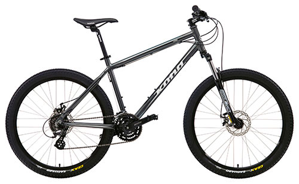

Велосипе́д (лат. vēlōx «быстрый» и pes «нога») — колёсное транспортное средство (или спортивный снаряд), приводимое в движение мускульной силой человека через ножные педали или (крайне редко) через ручные рычаги. Наиболее распространены велосипеды с двумя колёсами, но бывают и трёхколёсные велосипеды. Стал использоваться как средство передвижения ещё до широкого распространения городского общественного транспорта, в том числе автобусов, троллейбусов и трамваев. Также популярен среди туристов и в спортивных целях. В современном мире также используют электропривод для увеличения области использования велосипеда.